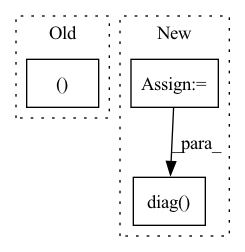

Pattern ID :21738
Before Change
y = G.y % 2
// return data objects needed for the network
return x, edge_index, y
def decision_function(self, G):
Predict raw anomaly score of X using the fitted detector.
The anomaly score of an input sample is computed based on distance After Change
= SparseTensor(row=edge_index[0], col=edge_index[1]).to_dense()
// adjacency matrix normalization
rowsum = dense_adj.sum(1)
d_inv_sqrt = torch.pow(rowsum, -0.5).flatten()
d_inv_sqrt[torch.isinf(d_inv_sqrt)] = 0.
d_mat_inv_sqrt = torch.diag( d_inv_sqrt)
adj = (dense_adj * d_mat_inv_sqrt).T * d_mat_inv_sqrt
edge_index = edge_index.to(self.device)
adj = adj.to(self.device)In pattern: SUPERPATTERN
Frequency: 4
Non-data size: 3
Instances Fragment ID: 69391569
Project Name: pygod-team/pygod
Commit Name: 929c5b097a9b6f23790b09174ad9d59bb38e9e79
Time: 2022-03-31
Author: dingxueying15@gmail.com
File Name: pygod/models/ocgnn.py
M Class Name: OCGNN
N Class Name: OCGNN
M Method Name: process_graph(2)
N Method Name: process_graph(2)
M Parent Class: BaseDetector
N Parent Class: BaseDetector
M File Name: pygod/models/ocgnn.py
N File Name: pygod/models/ocgnn.py
M Start Line: 314
M End Line: 319
N Start Line: 317
N End Line: 333
Before Change
def _step(self, action, player):
self.step(action, player)
self.record[-1] = [self.BLACK, self.WHITE][player], action
def diff_info(self, _):
if len(self.record) == 0:
return ""After Change
def _step(self, action, selected_player):
selected_color = [self.BLACK, self.WHITE][selected_player]
x, y = action // 3, action % 3
self.board[x, y] = selected_color
// check winning condition
if self.board[x, :].sum() == 3 * selected_color \
or self.board[:, y].sum() == 3 * selected_color \
or (x == y and np.diag(self.board, k=0).sum() == 3 * selected_color) \
or (x == 2 - y and np.diag( self.board[::-1, :], k=0) .sum() == 3 * selected_color):
self.win_color = selected_color
self.record.append((selected_color, action)) Fragment ID: 69391558
Project Name: dena/handyrl
Commit Name: 1dce83a00bbd21ff0a67fcb64ce25e5e59256b97
Time: 2021-03-04
Author: a.a.b.a.b.c.a.b.c.d.abcd1234@gmail.com
File Name: handyrl/envs/parallel_tictactoe.py
M Class Name: Environment
N Class Name: Environment
M Method Name: _step(3)
N Method Name: _step(3)
M Parent Class: TicTacToe
N Parent Class: TicTacToe
M File Name: handyrl/envs/parallel_tictactoe.py
N File Name: handyrl/envs/parallel_tictactoe.py
M Start Line: 27
M End Line: 28
N Start Line: 27
N End Line: 38
Before Change
// up[(first + sparse_variables_1):, _] = 0
mask = np.concatenate(([0] * sparsity, [1] * (view_p - sparsity))).astype(bool)
np.random.shuffle(mask)
weights[mask, _ ] = 0
weights = _decorrelate_dims(weights, cov_)
weights /= np.sqrt(np.diag((weights.T @ cov_ @ weights)))After Change
while np.sum(np.unique(mask, axis=1, return_counts=True)[1] > 1) > 0 or np.sum(
np.sum(mask, axis=0) == 0) > 0:
np.random.shuffle(mask.flat)
weights = weights * mask
weights = _decorrelate_dims(weights, cov_)
if np.sum(np.diag( (weights.T @ cov_ @ weights)) == 0) > 0:
print()
weights /= np.sqrt(np.diag((weights.T @ cov_ @ weights)))
true_features.append(weights) Fragment ID: 69391546
Project Name: jameschapman19/cca_zoo
Commit Name: fcbea373cbd6a237b62fdf365a4c7a09e46701ef
Time: 2021-05-06
Author: james.chapman.19@ucl.ac.uk
File Name: cca_zoo/data.py
M Class Name: AnonimousClass
N Class Name: AnonimousClass
M Method Name: generate_covariance_data(8)
N Method Name: generate_covariance_data(8)
M Parent Class:
N Parent Class:
M File Name: cca_zoo/data.py
N File Name: cca_zoo/data.py
M Start Line: 43
M End Line: 68
N Start Line: 35
N End Line: 71
Before Change
log_std = self.std_clamp(log_std)
return mean, log_std
if __name__ == "__main__":
use_cuda = torch.cuda.is_available()After Change
else:
// todo: is clamp really necessary?
log_std = self.std_clamp(log_std)
std = log_std.exp()
m = MultivariateNormal(mean.reshape(-1), torch.diag( std.reshape(-1)) )
action = m.sample()
action = action.reshape(mean.shape)
Fragment ID: 69391565
Project Name: tmdt-buw/karolos
Commit Name: 39ca64b6106c80c48f0605a15cde575769fad233
Time: 2020-04-23
Author: scheiderer@uni-wuppertal.de
File Name: agents/nnfactory/sac.py
M Class Name: Policy
N Class Name: Policy
M Method Name: forward(3)
N Method Name: forward(2)
M Parent Class: nn.Module
N Parent Class: nn.Module
M File Name: agents/nnfactory/sac.py
N File Name: agents/nnfactory/sac.py
M Start Line: 100
M End Line: 102
N Start Line: 95
N End Line: 115